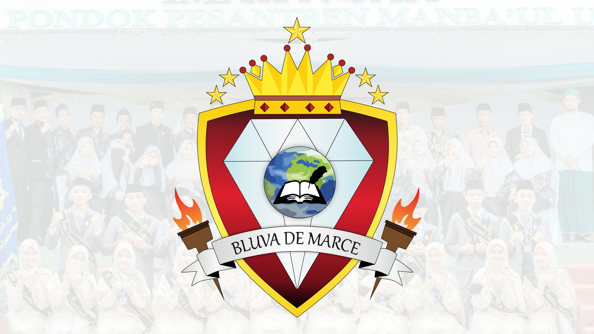

Melambangkan Rukun Iman Dan Rukun Islam, Jika 2 ditambah 3 menjadi 5 itulah Rukun Islam, dan jika 2 dikali 3 menjadi 6 maka itulah Rukun Iman.
Melambangkan Rekuasaan, legitimasi, Mkeabadian, kejayaan, dan kebijaksanaan. Delapan Gerigi melambangkan bahwa kami adalah angkatan yang ke delapan.
Melambangkan Perjuangan dalam melakukan pertahanan dan perlindungan diri dalam mencapai sebuah tujuan.
Melambangkan kekuatan, kesetiaan, kemewahan, keanggunan, kesetiaan, kemurnian, dan keseimbangan.
Melambangkan keluasan dan kualitas internasional atau mendunia.
Merupakan alat pembelajaran dan Melambangkan keilmuan, bentuk buku yang terbuka menunjukan wawasan yang luas, keterbukaan dan pengembangan.
Menunjukan wawasan yang luas, keterbukaan dan pengembangan.
Kembali ke Beranda